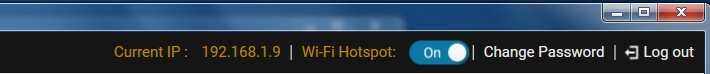
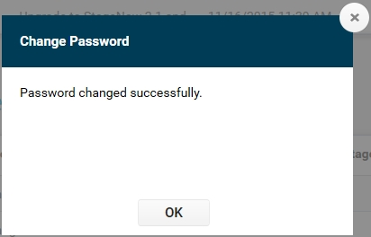
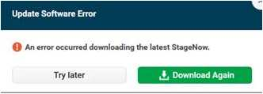
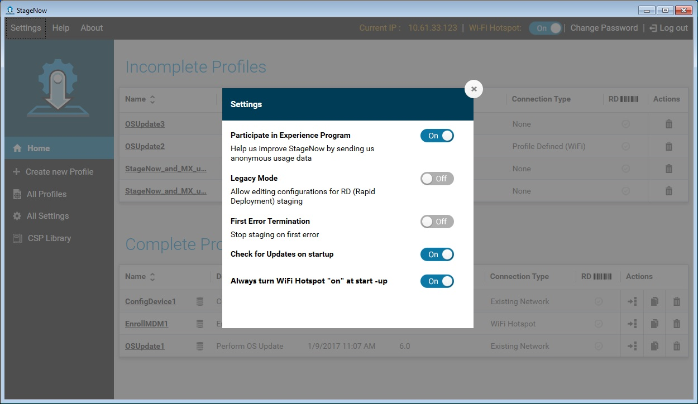

简介
本部分提供有关 StageNow Android 部署解决方案的信息，包括部署、其目的和用户的说明。
部署
部署是设备管理员或操作员将设备配置和/或将固件或软件部署到设备以准备好生产使用的过程。这需要配置、部署和管理系统与设备。
管理员可以部署企业中的所有设备、特定存储区或站点中的设备、现场/每个用户的设备。
StageNow 部署解决方案
StageNow 是 Zebra 下一代 Android 部署解决方案，支持 Marshmallow、Lollipop、KitKat 和 Jelly Bean，并且在 MX 4.3/4.4/5.X/6.X 平台上构建。它允许创建简单的配置文件或轻松部署设备，包含简单条码扫描、标签读取或音频文件播放。
StageNow 部署解决方案包括以下组件：
StageNow 工作站工具提供可在部署工作站（主机）内访问的用户界面。部署管理员使用此工具创建用于配置设备组件的部署配置文件，以及其他部署操作。工作站工具包括存储和保存在“工具”中输入的内容的数据库和服务器，例如设置和部署配置文件。
注意：此工具的内置部署服务器为 FTP 服务器，设备可将“部署”部分的部署内容、选择从远程服务器下载的文件以及 RD 部署文件下载到其中。由于多个应用程序无法同时使用端口 #21（通常 FTP 服务器使用），因此确保工作站工具 PC 没有在后台运行另一 FTP 服务器，或其他 FTP 服务器使用不同的端口。另请注意，部署 (FTP) 服务器仅在工具正在运行时运行，并在应用程序关闭时停止。因此，在使用上述配置文件部署设备时，必须正在运行该工具。
StageNow 客户端驻留在设备上，并为部署操作员提供用户界面以启动部署。操作员使用部署方法，例如打印和扫描条码、播放音频文件或读取 NFC 标签，以将部署材料传送到设备
支持的设备
以下是 Zebra StageNow 支持的 Android 设备和版本的列表。
- MC33：Nougat
- MC40：Lollipop
- TC25：Nougat
- TC70：Lollipop
- TC75：Lollipop
- TC8000：Lollipop
- WT6000：Lollipop
- ET51：Lollipop
- ET55：Lollipop
- TC51：Marshmallow、Nougat
- TC56：Marshmallow、Nougat
- TC70X：Marshmallow、Nougat
- TC75X：Marshmallow、Nougat
注意：
每个设备支持的 MX 功能取决于 BSP 中的 Android 操作系统、OSX 和 MX 版本。在位于 http://techdocs.zebra.com/mx/compatibility/ 的矩阵中选择适用的设备版本，以确定支持的功能。
StageNow 客户端安装程序附带的 Marshmallow、Lollipop 和 KitKat 设备支持所有 StageNow 功能。
Jelly Bean 和某些 KitKat 设备可能不包括 StageNow 客户端，但确实包括快速部署 (RD) 客户端。对于部署，这些设备可以扫描 StageNow 生成的 RD 条码，这会导致 RD 客户端连接到网络，然后为 KitKat 设备自动安装 MX 5.0、为 Jelly Bean 设备自动安装 MX 4.4 或更低版本，以及在设备上自动安装 StageNow 客户端。那么，可将 StageNow 客户端用于扫描 StageNow 配置文件条码用于配置。有关此流程的更多信息，请参阅 快速部署 (RD) 客户端。
注意：
要在 Jelly Bean 设备上安装 StageNow 客户端和 MX，请从 MX 4.4 或更低版本使用向导创建配置文件。
一旦使用 RD 客户端部署未包括 StageNow 客户端的设备，由于设备操作系统的限制，它们仍然可能只支持部分 StageNow 功能。请参阅特定设置类型的“功能兼容性”部分，以确定您的设备是否支持给定功能。
StageNow 用户
以下是 StageNow 用户：
部署管理员是 StageNow 工作站工具的主要用户，负责系统和客户端设备的配置、部署和管理。管理员创建各配置文件，以标识要执行的部署、收集部署内容（例如应用程序）、确定用于传送内容的部署方法，以及将此材料上传到工作站工具。
部署操作员标识要部署的设备，并使用工作站工具查看和选择管理员发布的配置文件。然后，操作员打印要用于部署设备的部署材料（例如条码），并使用设备上的 StageNow 客户端执行部署。操作员可以将设备传送给最终用户。
部署方法
以下是通过 StageNow 可用的部署方法。有关详细信息，请参阅设备部署：
条码 - 操作员生成包含配置文件信息的条码，并使用设备扫描这些条码，打印在纸张上或显示在工作站屏幕上，以配置该设备。
NFC 标签 - 操作员导出配置文件数据，并将其编程到 NFC 标签中，然后通过将标签放在设备某个接近范围内，使用设备的 NFC 标签读取器读取该标签，以将该配置文件部署到设备。
音频文件 - 操作员将包含配置文件数据的音频文件下载到设备，并播放该音频文件以配置该设备。
主页屏幕
要打开工具，请从“开始”菜单中选择 StageNow 图标。
如果已发布的配置文件可用，则会显示“部署操作员”主页屏幕。

操作员主页屏幕列示可用的最新配置文件。屏幕顶部显示当前使用的 IP 地址（如有），这在您需要将设备连接至部署服务器时非常有用。屏幕顶部还包括 Wi-Fi 热点选项，允许将台式计算机用作部署设备的 WiFi 热点。
此窗口的主要部分包括以下字段：
收藏夹 - 选择可将配置文件添加到“收藏夹配置文件”列表。
名称 - 管理员提供的配置文件名称。需要将客户端设备连接至部署服务器的配置文件将显示有附加至配置文件名称的服务器图标。
管理员备注 - 关于配置文件的任何注释。
上次更新 - 上次管理员更新配置文件的时间。
最新发布 - 上次发布配置文件的时间。
MX 版本 - 创建配置文件时使用的 MX 版本。
连接类型 - StageNow 如何连接至网络（仅限 MX 6.X）。
RD - 指示配置文件是否启用 RD，即是否可从此配置文件打印 RD 条码。
如果部署操作员没有已发布的配置文件，则会显示“欢迎”屏幕。

输入安装过程中设置的管理员密码，然后选择“登录”以打开管理员主页屏幕。

管理员主页屏幕列示按完成阶段分组的配置文件。
当前 IP 地址
屏幕顶部显示当前使用的 IP 地址，这在您需要将设备连接至配置服务器时非常有用。
如果只有一个 IP 地址可用，StageNow 选择此 IP 地址。
如果 StageNow 系统没有 IP 地址，则该窗口的“当前 IP”部分显示“不可用”。这可以限制打印 StageNow 条码或 NFC 标签。
如果有多个 IP 地址可用，并且未选中任一个，则该窗口的“当前 IP”部分显示“未选”。单击此部分以选择要用于部署的 IP 地址。

选择此 IP，然后选择“设置为当前”。保留此 IP 地址用于以后操作，包括在重新启动和系统重新启动之后。
Wi-Fi 热点
StageNow 工具允许配备无线网络接口卡的台式计算机用作部署设备的 Wi-Fi 热点。这允许在不需要外部 Wi-Fi 网络的情况下进行部署，并将条码数量减少为一个（采用默认安全性），或者多个（采用管理员选择的可选双重安全性）。它也不再需要重新打印条码，即使存在配置文件更改也是如此。
如果 Wi-Fi 热点已关闭，您可以通过标题栏上的按钮将其打开。

默认情况下，StageNow 工具在启动时启用 Wi-Fi 热点。您可以通过设置菜单在启动时禁用热点。
需要管理员权限
如果在启动 StageNow 时禁用 Wi-Fi 热点，则首次将其打开将调用“用户帐户控制”窗口。此窗口不会再次出现，直至此工具关闭并重新打开。
选择“是”以启动 Wi-Fi 热点服务，或选择“否”以取消此操作。
更改密码
屏幕右上角提供更改管理员密码的选项。
选择“更改密码”以更改管理员密码。

输入当前密码，然后在“新密码”和“确认新密码”字段中输入新密码。
选择“更改”。窗口指明密码已成功更改。

选择“确定”。
软件更新
如果有新的 StageNow 版本或更新组件可用，并且 StageNow 工具已连接到网络，则在此菜单栏下出现指示此信息的消息。
要启用或禁用此消息，请参阅设置。
注意：
只有管理员可以更新为最新软件和组件。管理员还可以注销，然后再次登录 StageNow 工具，以检查最新软件或组件更新。
有关最新可用版本中的新内容或可用组件的详细信息，请选择“了解更多信息”。

选择“稍后重试”或 X 以关闭此窗口和自动更新工具栏。
StageNow 工具更新
从“了解更多信息”窗口选择“下载并安装”或在自动更新工具栏上选择“立即安装”，以升级到更高版本。
如果存在未完成的配置文件，您必须先将其完成或删除，才能进行更新。

在“安装确认”窗口选择“继续”。

自动更新工具栏将显示一个进度条，然后指示正在安装软件。在“问题”弹出窗口中选择“是”以继续升级。

组件更新

从“了解更多信息”窗口选择“下载并安装”，或在自动更新工具栏上选择“更新”，以升级可用的软件组件。
自动更新工具栏将显示一个进度条，然后指示它正在应用组件更新。StageNow 工具重新启动并更新组件。
更新错误
更新期间，可能会发生以下错误：
如果安装工具指示未找到网络，请选择“确定”，检查网络连接，然后重新尝试安装。
如果访问主机服务器时出现问题，而非网络故障，请选择“再次下载”以重新尝试安装。

配置文件列表
“主页”窗口中的各种配置文件列表包括下列字段：
名称 - 管理员提供的配置文件名称。需要将客户端设备连接至部署服务器的配置文件将显示有附加至配置文件名称的服务器图标。
描述 - 配置文件的简短描述。
上次更新 - 上次管理员更新配置文件的时间。
MX 版本 - 创建配置文件时使用的 MX 版本。
连接类型 - StageNow 如何连接至网络（仅限 MX 6.X）。
RD - 指示配置文件是否启用 RD，即是否可从此配置文件打印 RD 条码。
操作 - 提供要针对配置文件执行的下列操作：
导出
 - 将配置文件导出供其他管理员在 StageNow 工具内使用，或导出用于 MDM。
- 将配置文件导出供其他管理员在 StageNow 工具内使用，或导出用于 MDM。复制
 - 复制配置文件以使用不同名称创建类似的配置文件。
- 复制配置文件以使用不同名称创建类似的配置文件。删除
 - 删除配置文件。
- 删除配置文件。
服务器图标
需要将客户端设备连接至部署服务器的配置文件将显示有附加到配置文件名称的服务器图标，如下面第一个配置文件名称旁边所示。

下表列示服务器图标在哪些情况下会出现，从而指明需要服务器连接：
| 配置文件配置 | 部署客户端 | 需要服务器 |
|---|---|---|
| StageNow 配置 | StageNow | |
| RD | 不适用 | |
| StageNow 配置 + RD 配置 | StageNow | |
| RD | X | |
| StageNow 配置 + 部署 | StageNow | X |
| RD | 不适用 | |
| StageNow 配置 + RD 配置 + 部署 | StageNow | X |
| RD | X |
StageNow 菜单
StageNow 工作站工具窗口左上角提供以下三个菜单项。
设置
工具左上角的“选择设置”提供五个选项。

参与体验计划
打开此设置以发送匿名使用数据，用于改进将来版本的 StageNow 体验。
传统模式
创建配置文件时，打开此设置以包括 RD 选项。如果此选项保持关闭，RD 部分在创建配置文件期间不会出现。
默认情况下，“传统模式”标志处于关闭状态。
如果开启，则显示所有配置文件的 RD 部分。
如果关闭，则在创建配置文件期间不会向管理员显示 RD 部分。
如果关闭，则现有配置文件的 RD 部分将灰显，并带有启用传统模式的链接。选择打开如上所示“设置”屏幕的链接，并打开“传统模式”标志，以启用 RD 部分内容。
如果关闭，且管理员在创建配置文件期间为此部分选择“否”，则不会显示 RD 部分。
第一个错误时终止
打开此设置以在出现第一个错误时终止部署进程。如果处于关闭状态，部署进程将继续，直至 StageNow 客户端处理配置文件中的最后一步。
如果打开“第一个错误时终止”标志，则部署进程将在出现第一个错误时终止。
如果关闭，部署进程将继续，直到 StageNow 客户端处理配置文件中的最后一步。
对于 Xpert 模式，如果打开“第一个错误时终止”，则只有在配置文件中存在 ConditionMgr DSD 时才有效。
启动时检查软件更新
打开此设置以在菜单栏下面显示一条消息，指明何时新 StageNow 版本可用。
启动时始终打开 WiFi 热点
StageNow 工具允许台式计算机用作部署设备的 WiFi 热点。
打开此设置以在启动 StageNow 工具时打开 Wi-Fi 热点。
如果 Wi-Fi 热点关闭，您还可以通过标题栏上的按钮将其开启。
如果工作站不支持 Wi-Fi 热点功能，则在“设置”窗口显示以下消息。

帮助
这将在默认浏览器中启动 StageNow 用户指南。
关于
这将列示 StageNow 版本，并且简要描述工作站工具。

StageNow 加密
StageNow 数据库始终处于加密状态，并链接至管理员密码。
加密部署数据以便在 StageNow 工作站工具之外使用，可以保护敏感信息。
导出配置文件时，将加密敏感参数以保护机密部署信息。
部署条码和 NFC 标签包含配置数据，并且默认情况下将加密，以防止未经授权的设备读取。请注意，加密可以添加大量信息，并需要额外的条码。关闭加密以加快部署速度时要格外小心，因为敏感参数可能容易发生未经授权的访问。
使用案例
部署管理员在 StageNow 工作站工具中使用预定义向导，配置设置和创建配置文件，用于定义企业内移动设备的软件配置和/或安装。这些向导表示将信息部署到设备的常见使用案例。
StageNow 部署流程概述
通用部署流程如下。有关每个步骤的更多详细信息，请参阅本指南的相应章节。
管理员确定企业内移动设备所需的软件配置和/或安装。
管理员打开 StageNow 工作站工具，然后选择其中一个提供的向导。向导提供一系列屏幕，管理员可在其中定义所需配置值，以创建设备的配置文件。
管理员逐步完成向导。每个向导的特定部分都显示设置模板。选择并保存此模板上的值将创建设置，管理员可将其保存以供在以后创建其他配置文件时使用。
完成向导后，管理员创建配置文件或一系列设置。
管理员查看配置文件的准确性。
管理员选择部署方法，例如条码和/或 NFC 标签的类型。
管理员生成和测试部署材料来验证配置文件的功能。
管理员发布用于设备部署的配置文件。
操作员使用工作站工具选择设备部署所需且由管理员发布的配置文件。
操作员打印部署条码或生成为配置文件提供的 NFC 标签。
操作员使用设备上的 StageNow 客户端扫描条码或读取 NFC 标签，从而将配置文件信息部署到该设备。
StageNow 向导
StageNow 提供以下用于创建配置文件的向导，以在企业内配置移动设备：
配置设备 - 配置最常用的设备设置，例如区域设置、安全选项、应用程序、MDM 注册和生产网络设置。此向导还允许您连接到部署和/或生产网络、重新启动设备或更新操作系统。
连接网络 - 连接到 Wi-Fi、GPRS 或以太网网络。您还可以启用、禁用、添加或删除网络。
在 MDM 中注册 - 注册设备以由 MDM 管理。使用此向导下载、安装、配置和启动 MDM 代理。此向导还允许您连接到部署和/或生产网络并重新启动设备。
管理应用程序 - 管理设备上的应用程序。使用此向导下载、安装、卸载和启动任何应用程序。此向导还允许您连接至部署和/或生产网络、安装许可证（仅限 MX 4.3）、配置 simulScan（仅限 MX 4.3）、下载数据文件和重新启动设备。
管理设备安全性 - 配置设备的安全性选项和策略。使用此向导可将应用程序列为白名单和黑名单、控制屏幕超时、启用或禁用 SD 卡、摄像头、GPRS、蓝牙、GPS、USB、加密 SD 卡、控制 PowerKey 菜单、设置 UI、未知源和威胁管理。
执行操作系统更新 - 在设备上执行操作系统更新。使用此向导将更新或补丁应用到操作系统，方法是将 zip 文件下载到设备或在设备上使用现有 zip 文件。此向导还允许您连接至网络。
擦除设备 - 使用 Enterprise 或恢复出厂设置销毁设备数据。
Xpert 模式 - 配置设备的任何可用设置。使用此向导可按任何顺序创建设置的任何组合。